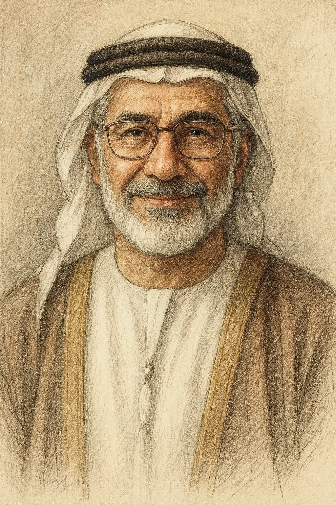
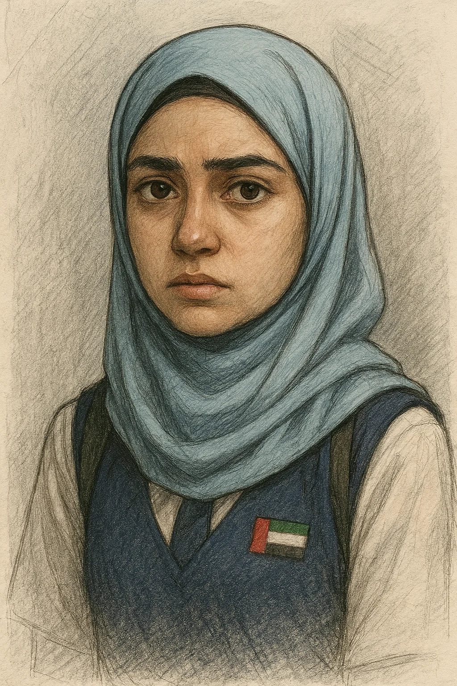
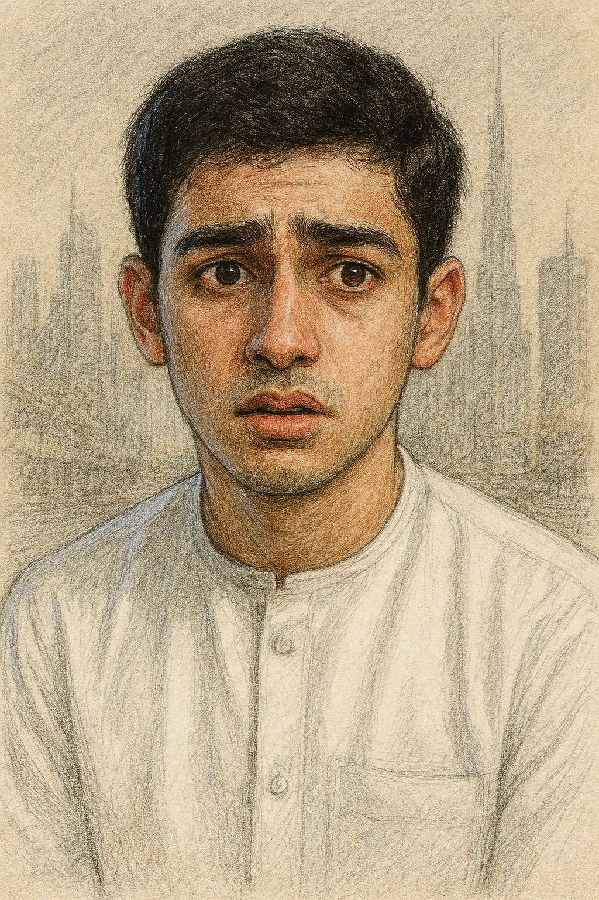
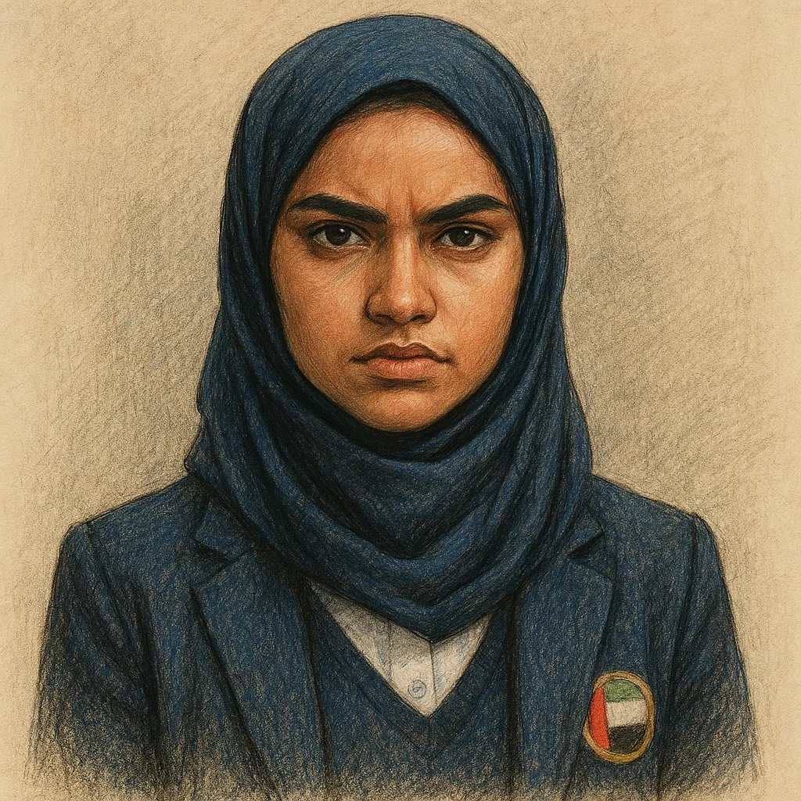

🎯 معلومات عن الضحية

يوسف الهاشمي
العمر:
52 سنة
الوظيفة:
مدير مدرسة النور الإسلامية
القسم:
الإدارة العامة
الوثيقة المسروقة:
ورقة إجابات امتحان الدراسات الإسلامية النهائي
المحتويات:
جميع إجابات أسئلة الامتحان النهائي للصف الثاني عشر
أهمية الوثيقة:
ستمكن من حصول على علامة كاملة بدون جهد (غش)
آخر مشاهدة:
15 يناير 2024 الساعة 11:00 صباحاً في مكتبه
وقت الإبلاغ:
15 يناير 2024 الساعة 3:00 مساءً
👥 المشتبه بهم

ليلى السالم
العمر:
17 سنة
الصف:
الثاني عشر - القسم العلمي
المستوى الأكاديمي:
ممتاز (المرتبة الأولى على الصف)
سنوات في المدرسة:
12 سنة (منذ الصف الأول)
الخلفية:
طالبة متفوقة ومجتهدة، دائماً في المرتبة الأولى. عائلتها تضع عليها ضغوطاً كبيرة للحصول على منحة دراسية كاملة في جامعة دولية مرموقة. والدها يتوقع منها الكمال في كل شيء، وأي درجة أقل من 100% تعتبر فشلاً في نظره.
العلاقة مع الضحية:
علاقة محترمة ومهنية. المدير يوسف الهاشمي يعتبرها مثالاً يُحتذى به للطالبات. هي عضوة في مجلس الطلاب ومساعدة للمدير في بعض المناسبات المدرسية.
تواجدها في 15 يناير:
تدّعي أنها كانت في المكتبة تدرس من الساعة 10:00 صباحاً حتى 2:00 ظهراً. لكن سجلات الكاميرا الأمنية تظهر أنها دخلت إلى ممر الإدارة في الساعة 11:30 صباحاً ولم تخرج إلا بعد 20 دقيقة.

سالم الكعبي
العمر:
18 سنة
الصف:
الثاني عشر - القسم الأدبي
المستوى الأكاديمي:
متوسط (درجات متفاوتة)
سنوات في المدرسة:
3 سنوات
الخلفية:
طالب ذكي جداً في التكنولوجيا والبرمجة، لكنه يعاني في المواد النظرية مثل الدراسات الإسلامية. معروف بمهاراته في الكمبيوتر ويساعد أحياناً قسم تقنية المعلومات في المدرسة. رسب في امتحان الدراسات الإسلامية في الفصل الأول ويحتاج لدرجة عالية في الامتحان النهائي لينجح.
العلاقة مع الضحية:
المدير يوسف يعرف سالم جيداً لأنه كان يستدعيه بشكل متكرر بسبب درجاته المنخفضة. ناقش معه مؤخراً إمكانية عدم تخرجه إذا لم يحسّن درجاته. سالم لديه مفتاح مكتب تقنية المعلومات المجاور لمكتب المدير.
تواجده في 15 يناير:
يقول إنه كان يصلح جهاز كمبيوتر في مختبر الحاسوب من الساعة 10:30 صباحاً حتى 12:30 ظهراً. لكن الحارس شاهده يخرج من مكتب تقنية المعلومات في الساعة 11:45 صباحاً حاملاً حقيبته، ويبدو متوتراً.

فاطمة المزروعي
العمر:
17 سنة
الصف:
الثاني عشر - القسم العلمي
المستوى الأكاديمي:
جيد جداً (المرتبة الثانية)
سنوات في المدرسة:
4 سنوات
الخلفية:
طالبة طموحة جداً ومتنافسة، دائماً في المرتبة الثانية بعد ليلى السالم مباشرة. تريد الحصول على منحة دراسية طبية، والمنحة تذهب للطالب الأول فقط. كانت الأولى قبل انضمام ليلى للمدرسة. معروفة بتصميمها القوي ورفضها أن تكون الثانية.
العلاقة مع الضحية:
علاقة جيدة ظاهرياً، لكن المدير رفض طلبها مؤخراً بإعادة تصحيح ورقة امتحان ادّعت أن تصحيحها كان غير عادل. فاطمة هي رئيسة النادي الثقافي ولديها مفتاح غرفة النشاطات القريبة من مكتب المدير.
تواجدها في 15 يناير:
تقول إنها كانت في اجتماع النادي الثقافي من الساعة 10:00 صباحاً حتى 1:00 ظهراً. لكن زميلاتها في النادي قلن إن الاجتماع انتهى في الساعة 11:15 صباحاً، وفاطمة غادرت قائلة إنها "ستذهب لترتيب شيء ما".